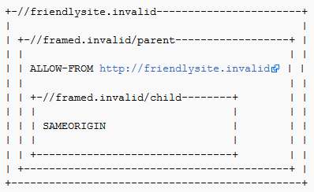

Introduction
This cheat sheet is intended to provide guidance for developers on how to defend against Clickjacking, also known as UI redress attacks.
There are three main mechanisms that can be used to defend against these attacks:
- Preventing the browser from loading the page in frame using the X-Frame-Options or Content Security Policy (frame-ancestors) HTTP headers.
- Preventing session cookies from being included when the page is loaded in a frame using the SameSite cookie attribute.
- Implementing JavaScript code in the page to attempt to prevent it being loaded in a frame (known as a "frame-buster").
Note that these mechanisms are all independent of each other, and where possible more than one of them should be implemented in order to provide defense in depth.
Defending with Content Security Policy (CSP) frame-ancestors directive
The frame-ancestors directive can be used in a Content-Security-Policy HTTP response header to indicate whether or not a browser should be allowed to render a page in a <frame> or <iframe>. Sites can use this to avoid Clickjacking attacks by ensuring that their content is not embedded into other sites.
frame-ancestors allows a site to authorize multiple domains using the normal Content Security Policy semantics.
Content-Security-Policy: frame-ancestors Examples
Common uses of CSP frame-ancestors:
Content-Security-Policy: frame-ancestors 'none';- This prevents any domain from framing the content. This setting is recommended unless a specific need has been identified for framing.
Content-Security-Policy: frame-ancestors 'self';- This only allows the current site to frame the content.
Content-Security-Policy: frame-ancestors 'self' *.somesite.com https://myfriend.site.com;- This allows the current site, as well as any page on
somesite.com(using any protocol), and only the pagemyfriend.site.com, using HTTPS only on the default port (443).
- This allows the current site, as well as any page on
Note that the single quotes are required around self and none, but may not occur around other source expressions.
See the following documentation for further details and more complex examples:
- https://w3c.github.io/webappsec-csp/#directive-frame-ancestors
- https://developer.mozilla.org/en-US/docs/Web/HTTP/Headers/Content-Security-Policy/frame-ancestors
Limitations
- Browser support: CSP frame-ancestors is not supported by all the major browsers yet.
- X-Frame-Options takes priority: Section "Relation to X-Frame-Options" of the CSP Spec says: "If a resource is delivered with an policy that includes a directive named frame-ancestors and whose disposition is "enforce", then the X-Frame-Options header MUST be ignored", but Chrome 40 & Firefox 35 ignore the frame-ancestors directive and follow the X-Frame-Options header instead.
Defending with X-Frame-Options Response Headers
The X-Frame-Options HTTP response header can be used to indicate whether or not a browser should be allowed to render a page in a <frame> or <iframe>. Sites can use this to avoid Clickjacking attacks, by ensuring that their content is not embedded into other sites. Set the X-Frame-Options header for all responses containing HTML content. The possible values are "DENY", "SAMEORIGIN", or "ALLOW-FROM uri"
X-Frame-Options Header Types
There are three possible values for the X-Frame-Options header:
- DENY, which prevents any domain from framing the content. The "DENY" setting is recommended unless a specific need has been identified for framing.
- SAMEORIGIN, which only allows the current site to frame the content.
- ALLOW-FROM uri, which permits the specified 'uri' to frame this page. (e.g.,
ALLOW-FROM http://www.example.com).- Check limitations below because this will fail open if the browser does not support it.
- Other browsers support the new CSP frame-ancestors directive instead. A few support both.
Browser Support
The following browsers support X-Frame-Options headers.
References:
- Mozilla Developer Network
- IETF Draft
- X-Frame-Options Compatibility Test - Check this for the LATEST browser support info for the X-Frame-Options header
Implementation
To implement this protection, you need to add the X-Frame-Options HTTP Response header to any page that you want to protect from being clickjacked via framebusting. One way to do this is to add the HTTP Response Header manually to every page. A possibly simpler way is to implement a filter that automatically adds the header to every page or to add it at Web Application Firewall of Web/Application Server level.
Common Defense Mistakes
Meta-tags that attempt to apply the X-Frame-Options directive DO NOT WORK. For example, <meta http-equiv="X-Frame-Options" content="deny"> will not work. You must apply the X-FRAME-OPTIONS directive as HTTP Response Header as described above.
Limitations
- Per-page policy specification: The policy needs to be specified for every page, which can complicate deployment. Providing the ability to enforce it for the entire site, at login time for instance, could simplify adoption.
- Problems with multi-domain sites: The current implementation does not allow the webmaster to provide a whitelist of domains that are allowed to frame the page. While whitelisting can be dangerous, in some cases a webmaster might have no choice but to use more than one hostname.
- ALLOW-FROM browser support: The ALLOW-FROM option is a relatively recent addition (circa 2012) and may not be supported by all browsers yet. BE CAREFUL ABOUT DEPENDING ON ALLOW-FROM. If you apply it and the browser does not support it, then you will have NO clickjacking defense in place.
- Multiple options not supported: There is no way to allow the current site and a 3rd party site to frame the same response. Browsers only honour one X-Frame-Options header and only one value on that header.
- Nested Frames don't work with SAMEORIGIN and ALLOW-FROM: In the following situation, the
http://framed.invalid/childframe does not load because ALLOW-FROM applies to the top-level browsing context, not that of the immediate parent. The solution is to use ALLOW-FROM in both the parent and child frames (but this prevents the child frame loading if the//framed.invalid/parentpage is loaded as the top level document).

- X-Frame-Options Deprecated While the X-Frame-Options header is supported by the major browsers, it was never standardized and has been deprecated in favour of the frame-ancestors directive from the CSP Level 2 specification.
- Proxies Web proxies are notorious for adding and stripping headers. If a web proxy strips the X-Frame-Options header then the site loses its framing protection.
Defending with SameSite Cookies
The SameSite cookie attribute defined in RFC 6265bis is primarily intended to defend against cross-site request forgery (CSRF); however it can also provide protection against Clickjacking attacks.
Cookies with a SameSite attribute of either strict or lax will not be included in requests made to a page within an <iframe>. This means that if the session cookies are marked as SameSite, any Clickjacking attack that requires the victim to be authenticated will not work, as the cookie will not be sent. An article on the Netsparker blog provides further details on which types of requests cookies are sent for with the different SameSite policies.
This approach is discussed on the JavaScript.info website.
Limitations
If the Clickjacking attack does not require the user to be authenticated, this attribute will not provide any protection.
Additionally, while SameSite attribute is supported by most modern browsers, there are still many users (approximately 12% as of August 2019) with browsers that do not support it.
The use of this attribute should be considered as part of a defence-in-depth approach, and it should not be relied upon as the sole protective measure against Clickjacking.
Best-for-now Legacy Browser Frame Breaking Script
One way to defend against clickjacking is to include a "frame-breaker" script in each page that should not be framed. The following methodology will prevent a webpage from being framed even in legacy browsers, that do not support the X-Frame-Options-Header.
In the document HEAD element, add the following:
First apply an ID to the style element itself:
<style id="antiClickjack">
body{display:none !important;}
</style>
Then, delete that style by its ID immediately after in the script:
<script type="text/javascript">
if (self === top) {
var antiClickjack = document.getElementById("antiClickjack");
antiClickjack.parentNode.removeChild(antiClickjack);
} else {
top.location = self.location;
}
</script>
This way, everything can be in the document HEAD and you only need one method/taglib in your API.
Reference:
window.confirm() Protection
The use of X-Frame-Options or a frame-breaking script is a more fail-safe method of clickjacking protection. However, in scenarios where content must be frameable, then a window.confirm() can be used to help mitigate Clickjacking by informing the user of the action they are about to perform.
Invoking window.confirm() will display a popup that cannot be framed. If the window.confirm() originates from within an iframe with a different domain than the parent, then the dialog box will display what domain the window.confirm() originated from. In this scenario the browser is displaying the origin of the dialog box to help mitigate Clickjacking attacks. It should be noted that Internet Explorer is the only known browser that does not display the domain that the window.confirm() dialog box originated from, to address this issue with Internet Explorer insure that the message within the dialog box contains contextual information about the type of action being performed. For example:
<script type="text/javascript">
var action_confirm = window.confirm("Are you sure you want to delete your youtube account?")
if (action_confirm) {
//... Perform action
} else {
//... The user does not want to perform the requested action.`
}
</script>
Insecure Non-Working Scripts DO NOT USE
Consider the following snippet which is NOT recommended for defending against clickjacking:
<script>if (top!=self) top.location.href=self.location.href</script>
This simple frame breaking script attempts to prevent the page from being incorporated into a frame or iframe by forcing the parent window to load the current frame's URL. Unfortunately, multiple ways of defeating this type of script have been made public. We outline some here.
Double Framing
Some frame busting techniques navigate to the correct page by assigning a value to parent.location. This works well if the victim page is framed by a single page. However, if the attacker encloses the victim in one frame inside another (a double frame), then accessing parent.location becomes a security violation in all popular browsers, due to the descendant frame navigation policy. This security violation disables the counter-action navigation.
Victim frame busting code:
if(top.location != self.location) {
parent.location = self.location;
}
Attacker top frame:
<iframe src="attacker2.html">
Attacker sub-frame:
<iframe src="http://www.victim.com">
The onBeforeUnload Event
A user can manually cancel any navigation request submitted by a framed page. To exploit this, the framing page registers an onBeforeUnload handler which is called whenever the framing page is about to be unloaded due to navigation. The handler function returns a string that becomes part of a prompt displayed to the user.
Say the attacker wants to frame PayPal. He registers an unload handler function that returns the string "Do you want to exit PayPal?". When this string is displayed to the user is likely to cancel the navigation, defeating PayPal's frame busting attempt.
The attacker mounts this attack by registering an unload event on the top page using the following code:
<script>
window.onbeforeunload = function(){
return "Asking the user nicely";
}
</script>
<iframe src="http://www.paypal.com">
PayPal's frame busting code will generate a BeforeUnload event activating our function and prompting the user to cancel the navigation event.
No-Content Flushing
While the previous attack requires user interaction, the same attack can be done without prompting the user. Most browsers (IE7, IE8, Google Chrome, and Firefox) enable an attacker to automatically cancel the incoming navigation request in an onBeforeUnload event handler by repeatedly submitting a navigation request to a site responding with "204 - No Content".
Navigating to a No Content site is effectively a NOP, but flushes the request pipeline, thus canceling the original navigation request. Here is sample code to do this:
var preventbust = 0
window.onbeforeunload = function() { killbust++ }
setInterval( function() {
if(killbust > 0){
killbust = 2;
window.top.location = 'http://nocontent204.com'
}
}, 1);
<iframe src="http://www.victim.com">
Exploiting XSS filters
IE8 and Google Chrome introduced reflective XSS filters that help protect web pages from certain types of XSS attacks. Nava and Lindsay (at Blackhat) observed that these filters can be used to circumvent frame busting code. The IE8 XSS filter compares given request parameters to a set of regular expressions in order to look for obvious attempts at cross-site scripting. Using "induced false positives", the filter can be used to disable selected scripts. By matching the beginning of any script tag in the request parameters, the XSS filter will disable all inline scripts within the page, including frame busting scripts. External scripts can also be targeted by matching an external include, effectively disabling all external scripts. Since subsets of the JavaScript loaded is still functional (inline or external) and cookies are still available, this attack is effective for clickjacking.
Victim frame busting code:
<script>
if(top != self) {
top.location = self.location;
}
</script>
Attacker:
<iframe src="http://www.victim.com/?v=<script>if''>
The XSS filter will match that parameter <script>if to the beginning of the frame busting script on the victim and will consequently disable all inline scripts in the victim's page, including the frame busting script. The XSSAuditor filter available for Google Chrome enables the same exploit.
Clobbering top.location
Several modern browsers treat the location variable as a special immutable attribute across all contexts. However, this is not the case in IE7 and Safari 4.0.4 where the location variable can be redefined.
IE7: Once the framing page redefines location, any frame busting code in a subframe that tries to read top.location will commit a security violation by trying to read a local variable in another domain. Similarly, any attempt to navigate by assigning top.location will fail.
Victim frame busting code:
if(top.location != self.location) {
top.location = self.location;
}
Attacker:
<script>var location = "clobbered";</script>
<iframe src="http://www.victim.com"></iframe>
Safari 4.0.4
We observed that although location is kept immutable in most circumstances, when a custom location setter is defined via defineSetter (through window) the object location becomes undefined.
The framing page simply does:
<script>
window.defineSetter("location", function(){});
</script>
Now any attempt to read or navigate the top frame's location will fail.
Restricted zones
Most frame busting relies on JavaScript in the framed page to detect framing and bust itself out. If JavaScript is disabled in the context of the subframe, the frame busting code will not run. There are unfortunately several ways of restricting JavaScript in a subframe:
In IE 8:
<iframe src="http://www.victim.com" security="restricted"></iframe>
In Chrome:
<iframe src="http://www.victim.com" sandbox></iframe>
Firefox and IE:
Activate designMode in parent page.
document.designMode = "on";